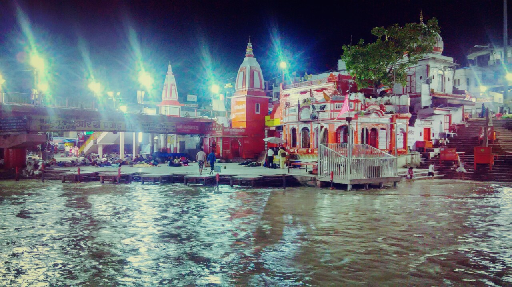

The Calling ...

After a hectic period as in any graduating persons life, I and a good friend of mine decided to take some time off in the Indian Himalayas and live our lives at our own pace. This was the summer of 2016 and another reason to go high up the mountains. We explored the places near Joshimath which itself was a beautiful town studded with the beautiful Pahari ladkiya :)
We trekked to Auli and camped there for the night and the next day went to Govind Ghat. Auli was gorgeously beautiful and the place where we camped had a breathtaking view of the Nanda Devi and the Trishul peaks. As far as the eyes could see, the further the mountains went, and the deeper I sank within. I stood there motionless awed by the beauty of raw ruggedness as if something similar was calling from within. The friend who had accompanied me had a haunted night with the fear of wild bears from the nearby forest of the Nanda Devi Sanctuary. The next day at Govind Ghat was spent in the gurudwara as we had reached there late and were not allowed to start our trek to Valley of Flowers and Hem Kund Sahib (both are quite close).
We started early (around 5 in the morning) the next day for Ghangaria which is a base camp for Valley of Flowers and Hem Kund Sahib and which is around 11 Km from Govind Ghat. The trek was overwhelmingly tiring and beautiful with lots of Sikh people accompanying us for their pilgrimage to Hem Kund Sahib. After reaching Ghangaria, which took us around four and a half hours, we rested there for an hour and then started towards Valley of Flowers. One is not allowed to camp in Valley of Flowers and so we had to deposit all our camping gear at the forest check-post. We traveled light for Valley of Flowers with only some seedless dates and water which later turned out to be the secret for many people reaching Valley of Flowers :D. This was not the season of bloom and so Valley of Flowers had mostly grass, lush-green grass, and a magnificent view of the snow capped mountains all around. On the way we also drank water from the glacial melt and realized that it was the best water we had ever drank. We spent about an hour in the Valley of Flowers and then started back to the forest check-post as we had been given a time limit to be back by 5 pm. Looking at the crowd of Sikh people in Ghangaria we planned to trek back to Govind Ghat the same evening. We left around 4:30 pm and as it was mostly descent from an altitude of 3111 m, we anticipated it will not be that tiring as had been the morning ascent. At some point on our way back to Govind Ghat, we started feeling as if the distance had been doubled. With the thought of good food and a warm bed at the gurudwara, we encouraged ourselves to keep walking. We reached the gurudwara at Govind Ghat around 7 pm. There we refreshed ourselves with a good cold bath and some hot tea.
The following morning we started out early for Badrinath but sadly we had to wait for an hour and a half for a jeep that would take us to Badrinath, which is 25 Km from Govind Ghat. Badrinath is very serene and beautiful and I would describe it as among a handful of places where one experiences the flow of things as if passing through you like a fluid, tranquilizing you every moment. My friend visited the Badrinath temple as I enjoyed it from the outside wondering what's in the temple, about its legends and also looking at peoples faces to get a clue as to how simple it is for them to believe in a figure they have never heard, seen or even rationally deduced. We spent the rest of the day walking about in the local market, having ginger tea as we pleased. By 4 in the evening we started to climb a slope in order to put up our camp. We found it difficult to get a flat piece of land where we could put up our tent. Later it started to become dark and so we settled for a not-so-flat piece of land half way up a mountain.
After setting up our camp and drinking tang that my friend had laboriously made as he had to walk down to the town to fetch water, we sat about thinking to ourselves, listening to the silence all around and as far as we could see the mountains rose higher and higher around Alaknanda , never ending, never losing their dignity and their magnificence. As is well known that mountains make their own weather, soon the clouds gathered over the valley and it started drizzling. With the fear of heavy rains, we lay inside the tent munching on uncooked maggie (tastes really good) and as it would also warm the tent since it was growing quite cold outside.
Early morning the next day we had our bus from Badrinath to Haridwar, a distance of 330 Km on one of the most treacherous roads in the world as it seemed to me. The bus rode for more than twelve hours in a never changing landscape of mountains, the Shivaliks, and it was not until 7 in the evening that we reached Haridwar. We refreshed ourselves and then had our dinner at a local restaurant. We then planned to sleep until morning at Har-Ki-Pauri near the Ganges as it was very breezy there and would save us the trouble of mosquitoes. Also at the start of our trip the previous week we had done the same thing and I had really enjoyed soaking my feet in the Ganges and given that it was quite a view to be missed if one is in Haridwar we lay back there until 4 in the morning.
Our train to Delhi was at 6 am and so we reached the station well in advance. It truly was an experience of a lifetime and if next time I go there then I would definitely not miss the trek from Badrinath to the Nilkantha Peak which is around 24 km from Badrinath and also the Sakopanth trek. But until then I would only dream of being in such an amazing space and time.